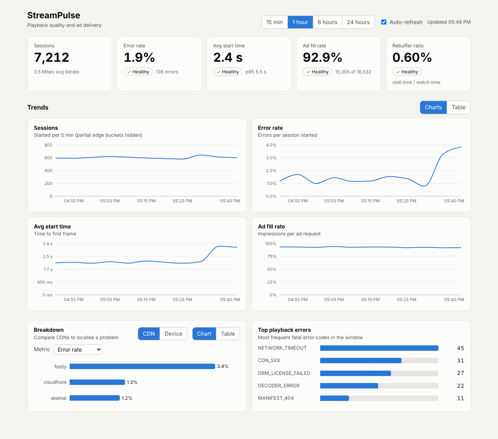
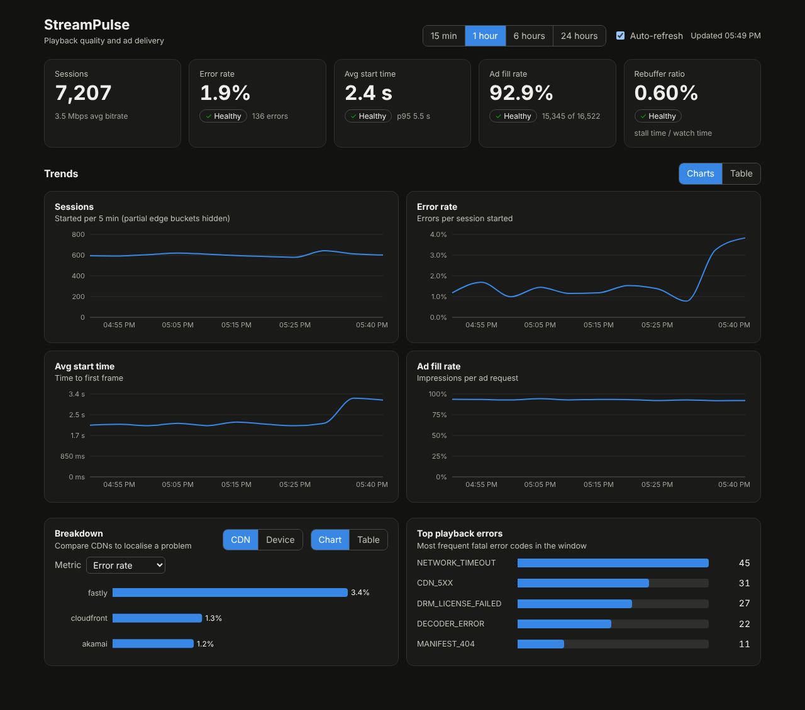

StreamPulse
Playback quality and ad-delivery analytics for a video streaming service. A FastAPI backend ingests player telemetry into PostgreSQL and serves KPIs like error rate, start time, rebuffering and ad fill over REST and GraphQL to a React dashboard, with Prometheus alerts, Grafana dashboards, CI, and Terraform for deploying to AWS. I built this to learn how streaming services measure playback quality and ad delivery, and to practice building a full-stack service the way it runs in production: tested, monitored, containerized and deployable to the cloud.